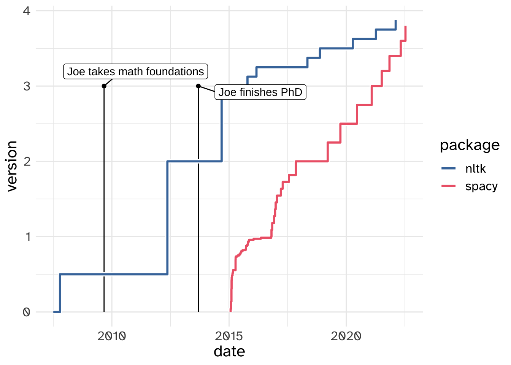

Addendum
data
nltk vs spaCy
In the lecture notes before, I showed you how to do tokenizing in the python package nltk. But there’s another big NLP package out there called spaCy. Why did I focus on nltk? I think I can best explain that with this graph:

Tokenizing with spaCy
# bash
python -m spacy download en_core_web_smimport spacy
nlp = spacy.load("en_core_web_sm")
phrase2 = """
CATS had a budget of $100,000,000, most of which
went into the so-called 'digital fur technology'.
It's a little hard to believe, but it only made
$75.5 million at the box office. #badmovie :-P
"""
doc = nlp(phrase2.strip().replace("\n", " "))for token in doc:
print(f"| `{token.text}`", end = " ")CATS | had | a | budget | of | $ | 100,000,000 | , | most | of | which | | went | into | the | so | - | called | ' | digital | fur | technology | ' | . | | It | 's | a | little | hard | to | believe | , | but | it | only | made | | $ | 75.5 | million | at | the | box | office | . | # | badmovie | :-P